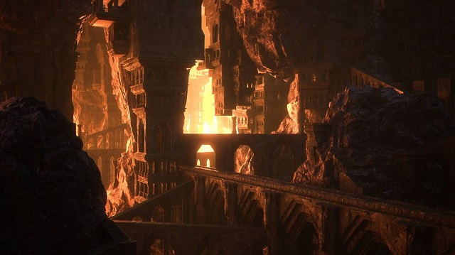
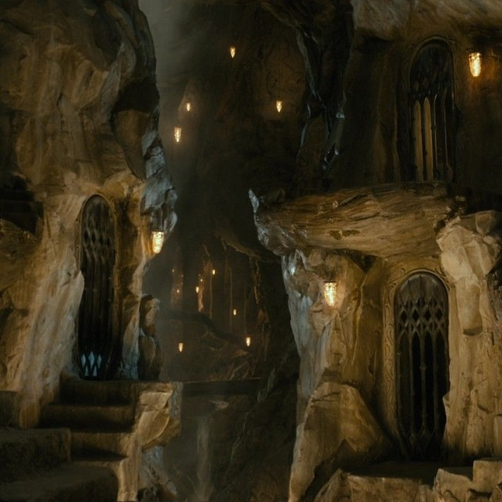
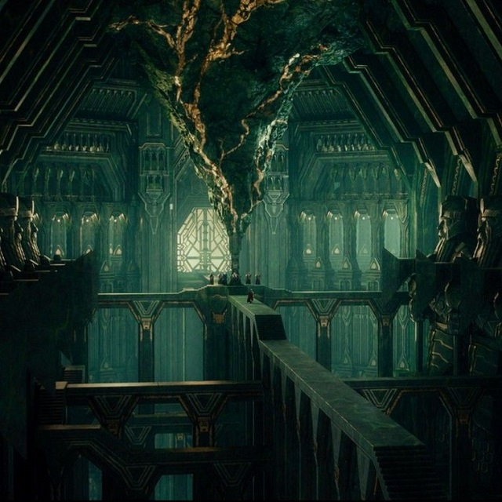

Mória — a törpök elveszett királysága
A Ködhegység gyomrában, hatalmas kapuk mögött rejtőzik Mória, más néven Khazad-dûm, a törpök egykori legnagyobb városa. Egykor gazdagságáról, mesterségbeli tudásáról és hatalmas termeiről volt híres.
A föld alatti csodavilág
Mória nem egyszerű barlangrendszer, hanem egy egész föld alatti birodalom: Óriási oszlopcsarnokok Végtelen lépcsősorok Fáklyafényben csillogó kőfalak Mély bányák, ahol mithrilt termeltek A törpök itt alkották legnagyobb műveiket.
A város jelentősége
Mória a törpék egykori legnagyobb városa volt, ahol a törpök különleges mesterségeiket és hatalmas építményeiket hozták létre. A város gazdagsága a mithril bányászatából származott, amely a legértékesebb fém Középföldén.
Elhelyezkedés
Mória a Ködhegység gyomrában, hatalmas kapuk mögött rejtőzik. A város körül zöldellő füves síkságok és erdők terülnek el, amelyek a város számára természetes védelmet nyújtanak.
Az átjáró a sötétségen át
A Gyűrű Szövetsége Mórián keresztül próbál átjutni a hegyeken. Itt hangzik el Gandalf híres mondata a hídon: "Nem juthatsz át!" Gandalf a Balroggal vívott harcban a mélybe zuhan — ezzel Mória a történet egyik legemlékezetesebb helyszínévé válik.
Az elveszett dicsőség emléke
Mória ma sötét és veszélyes, mégis minden kőfala a törpök egykori nagyságáról mesél. Egy elfeledett királyság, amely örökre része marad Középfölde legendáinak.